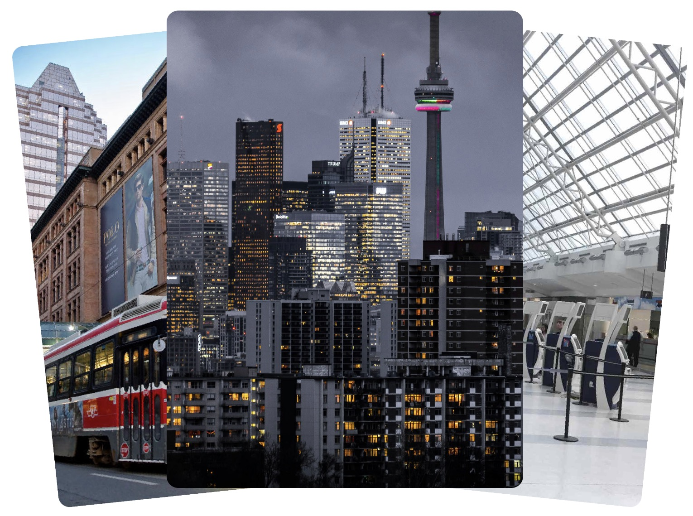
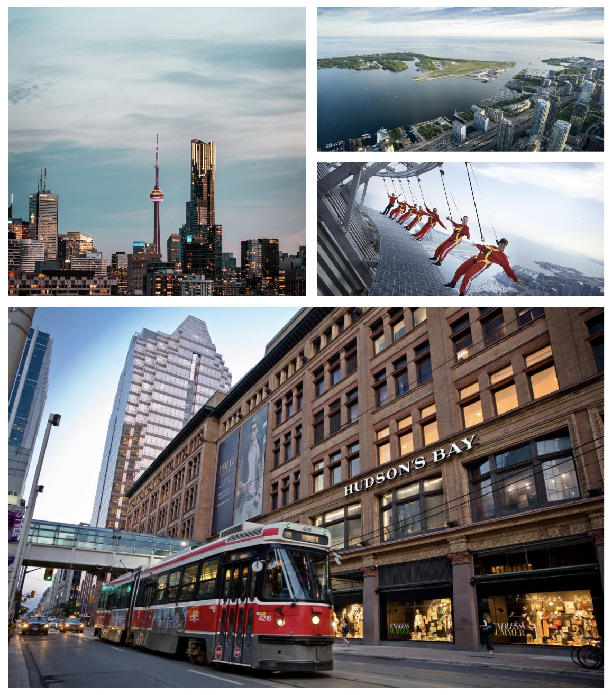
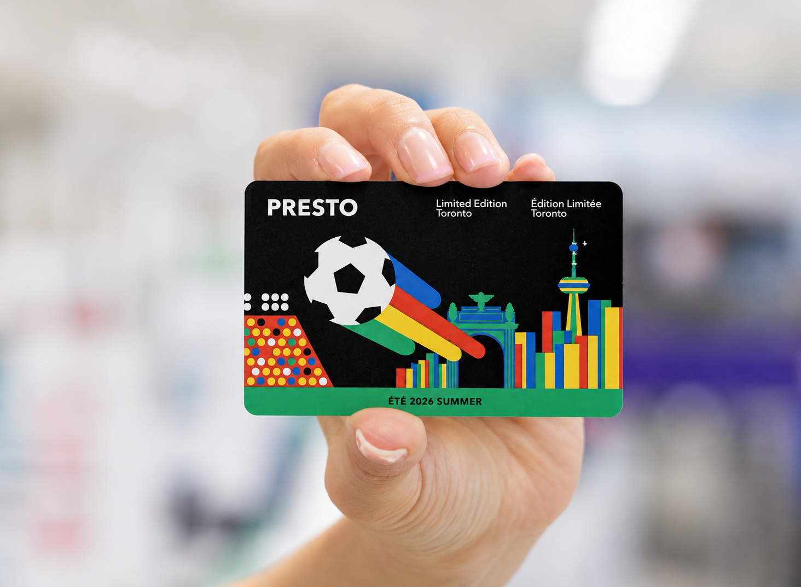

Proudly sponsored by Qatar airways

The CN tower is a 553 metre tall observation tower in downtown toronto and it is the tallest free standing structure in the western hemisphere. It has many interesting activities like the world’s highest hand free walk and observation decks of the city and Lake Ontario.
The toronto islands are a 15 minute ferry ride from downtown. You can relax on sandy beaches, rent a kayak, bike past 19th century villages or enjoy rides at CenterVille Amusent park. The car free island pathways provide a relaxing space to walk or bike.
Toronto has a rich world class cultural scene with many cool places. The royal Ontario museum, Art Gallery of toronto, and aga khan museum. There is also a shoe museum which has the world’s largest history of shoes and there is also a hockey hall of fame.
The annex in toronto is a vibrant historic neighbourhood with a student friendly design. It is famous for it’s independent cafes, stunning Victorian architecture, diverse global dining and proximity to the University of Toronto.

The PRESTO card is a contactless card similar to an Oyster card enabling you to pay across all the transport systems in Toronto, including buses, trains and street cars.
The Pearson International airport serves the whole city and is a modern airport in the city with good connectivity to the rest of the city

Designed and developed in London by Badie Badie and Rohan Kharel. This website is a product of the Toronto 2026 World Cup Final bid.